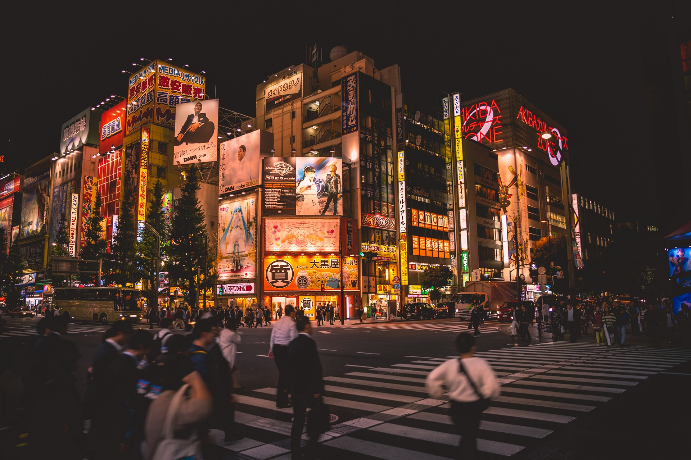

Eine Reise zur größten Metropolregion der Welt
Tokyo ist mit einer Fläche von 8.231km² und 39,105 Mio Einwohnern die größte Metropolregion der Welt
Dadurch ist Tokyo ein beliebtes Reiseziel. Nicht nur wegen seiner Größe, sondern auch wegen der Kultur und der Gegensätze.
